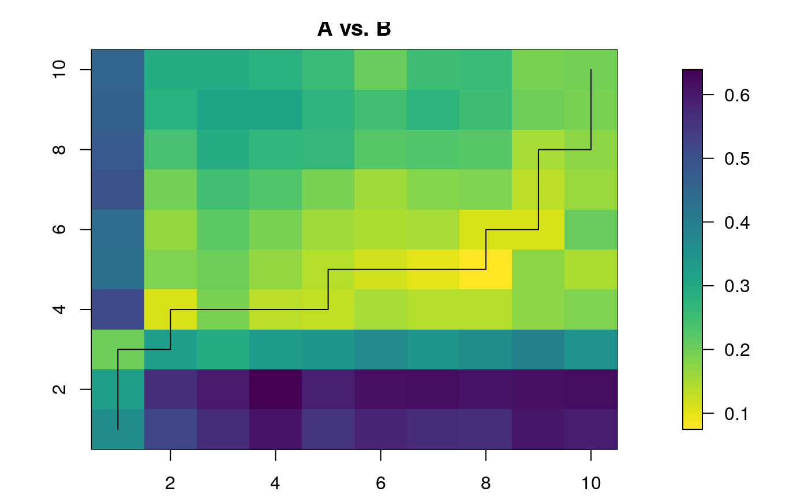

workflowSlotting.RdGenerates a composite sequence, constrained by sample order, from two sequences, by minimizing the dissimilarity between adjacent samples of each input sequence. The algorithm computes the distance matrix, least cost matrix, and least cost path of two sequences, and uses the least cost path file to find the slotting that better minimizes the dissimilarity between adjacent samples. The algorithm assumes that the samples are not aligned or paired.
workflowSlotting( sequences = NULL, grouping.column = NULL, time.column = NULL, exclude.columns = NULL, method = "manhattan", plot = TRUE )
| sequences | dataframe with multiple sequences identified by a grouping column generated by |
|---|---|
| grouping.column | character string, name of the column in |
| time.column | character string, name of the column with time/depth/rank data. |
| exclude.columns | character string or character vector with column names in |
| method | character string naming a distance metric. Valid entries are: "manhattan", "euclidean", "chi", and "hellinger". Invalid entries will throw an error. |
| plot | boolean, if |
A dataframe with the same number of rows as sequences, ordered according to the best solution found by the least-cost algorithm.
#loading the data data(pollenGP) #getting first 20 samples pollenGP <- pollenGP[1:20, ] #sampling indices set.seed(10) #to get same result every time sampling.indices <- sort(sample(1:20, 10)) #subsetting the sequence A <- pollenGP[sampling.indices, ] B <- pollenGP[-sampling.indices, ] #preparing the sequences AB <- prepareSequences( sequence.A = A, sequence.A.name = "A", sequence.B = B, sequence.B.name = "B", grouping.column = "id", exclude.columns = c("depth", "age"), transformation = "hellinger" ) AB.combined <- workflowSlotting( sequences = AB, grouping.column = "id", time.column = "age", exclude.columns = "depth", method = "manhattan", plot = TRUE )AB.combined#> id original.index depth age Abies Juniperus Hedera Plantago #> 11 B 1 1 3.92 0.9927867 2.978777e-05 0.02492224 2.978777e-05 #> 12 B 2 2 3.95 0.9904852 2.961095e-05 0.01621859 1.621859e-02 #> 13 B 3 4 4.00 0.9907688 2.944234e-05 0.02633403 6.105294e-02 #> 1 A 1 3 3.97 0.9916559 2.957467e-05 0.02091245 3.239743e-02 #> 2 A 2 6 4.05 0.9906638 2.926530e-05 0.04138738 7.907048e-02 #> 14 B 4 5 4.02 0.9884694 2.930423e-05 0.06146906 8.078617e-02 #> 3 A 3 7 4.07 0.9900329 2.917672e-05 0.04126212 8.252423e-02 #> 4 A 4 8 4.10 0.9873091 2.899464e-05 0.05346348 8.200924e-02 #> 5 A 5 9 4.17 0.9901755 2.884469e-05 0.04278358 6.050513e-02 #> 15 B 5 13 4.27 0.9891456 2.849014e-05 0.05480189 4.934638e-02 #> 6 A 6 10 4.20 0.9908150 2.876462e-05 0.05381368 4.982179e-02 #> 7 A 7 11 4.22 0.9891059 2.864988e-05 0.04962306 6.077558e-02 #> 8 A 8 12 4.25 0.9893396 2.855977e-05 0.05990749 5.343044e-02 #> 16 B 6 14 4.30 0.9914179 2.846013e-05 0.06363878 2.846013e-02 #> 9 A 9 15 4.32 0.9909760 2.838436e-05 0.05885906 3.700868e-02 #> 17 B 7 17 4.37 0.9920228 2.825829e-05 0.06318745 2.963754e-02 #> 18 B 8 18 4.40 0.9931386 2.819756e-05 0.06367905 2.184173e-02 #> 10 A 10 16 4.35 0.9917098 2.831146e-05 0.05371722 4.476435e-02 #> 19 B 9 19 4.42 0.9930501 2.813388e-05 0.07005278 1.989365e-02 #> 20 B 10 20 4.45 0.9936422 2.805847e-05 0.07153534 1.984033e-02 #> Boraginaceae Crassulaceae Pinus Ranunculaceae Rhamnus #> 11 0.02106314 4.212627e-02 2.978777e-05 3.396329e-02 2.978777e-05 #> 12 0.03626586 6.419501e-02 2.961095e-05 3.626586e-02 2.961095e-05 #> 13 0.07211872 7.506354e-02 2.944234e-05 2.944234e-02 2.944234e-05 #> 1 0.04285777 9.115525e-02 2.957467e-05 4.182490e-02 2.957467e-05 #> 2 0.08972570 9.254500e-03 2.926530e-05 2.926530e-05 2.926530e-05 #> 14 0.09719112 2.930423e-05 2.930423e-05 2.930423e-05 2.930423e-05 #> 3 0.09226490 2.917672e-05 2.917672e-05 2.917672e-05 2.917672e-05 #> 4 0.11415203 2.899464e-05 2.899464e-05 2.899464e-05 1.296680e-02 #> 5 0.10440023 2.884469e-05 2.884469e-05 2.884469e-05 2.884469e-05 #> 15 0.11034185 2.849014e-05 2.849014e-05 9.009375e-03 2.849014e-05 #> 6 0.09626484 2.876462e-05 2.876462e-05 2.876462e-05 2.876462e-05 #> 7 0.11096052 2.864988e-05 2.864988e-05 2.864988e-05 2.864988e-05 #> 8 0.11061153 2.855977e-05 2.855977e-05 2.855977e-05 2.855977e-05 #> 16 0.09858878 2.846013e-05 2.846013e-05 2.846013e-05 2.846013e-05 #> 9 0.09832631 2.838436e-05 2.838436e-05 2.838436e-05 2.838436e-05 #> 17 0.08286956 2.825829e-05 2.825829e-05 2.825829e-05 2.825829e-05 #> 18 0.07460372 2.819756e-05 2.819756e-05 2.819756e-05 2.819756e-05 #> 10 0.08540494 2.831146e-05 2.831146e-05 1.266127e-02 2.831146e-05 #> 19 0.06537722 2.813388e-05 2.813388e-05 8.896713e-03 2.813388e-05 #> 20 0.06017871 2.805847e-05 2.805847e-05 2.805847e-05 2.805847e-05 #> Caryophyllaceae Dipsacaceae Betula Acer Armeria #> 11 1.332150e-02 0.009419721 2.978777e-05 1.332150e-02 6.031564e-02 #> 12 1.621859e-02 0.009363805 2.961095e-05 1.621859e-02 4.954860e-02 #> 13 2.944234e-05 0.013167016 1.862097e-02 2.944234e-05 2.944234e-05 #> 1 2.957467e-05 0.022908440 9.352332e-03 2.957467e-05 2.474394e-02 #> 2 2.926530e-05 0.009254500 2.926530e-02 2.926530e-05 1.308784e-02 #> 14 2.930423e-05 0.013105248 3.073453e-02 2.930423e-05 2.930423e-05 #> 3 2.917672e-05 0.029176723 1.845298e-02 2.917672e-05 2.917672e-05 #> 4 2.899464e-05 0.012966799 3.305898e-02 2.899464e-05 2.899464e-05 #> 5 2.884469e-05 0.009121491 3.288800e-02 2.884469e-05 2.884469e-05 #> 15 2.849014e-05 0.022068371 2.849014e-02 2.849014e-05 2.849014e-05 #> 6 2.876462e-05 0.018192346 2.572786e-02 2.876462e-05 2.876462e-05 #> 7 2.864988e-05 0.018119778 3.004825e-02 2.864988e-05 2.864988e-05 #> 8 2.855977e-05 0.012772319 2.554464e-02 2.855977e-05 2.855977e-05 #> 16 2.846013e-05 0.008999883 2.381145e-02 2.846013e-05 2.846013e-05 #> 9 2.838436e-05 0.012693872 3.476360e-02 2.838436e-05 2.838436e-05 #> 17 2.825829e-05 0.012637489 3.460919e-02 2.825829e-05 2.825829e-05 #> 18 2.819756e-05 0.008916850 3.566740e-02 2.819756e-05 2.819756e-05 #> 10 2.831146e-05 0.021929965 3.691363e-02 2.831146e-05 2.831146e-05 #> 19 2.813388e-05 0.017793425 2.813388e-02 2.813388e-05 2.813388e-05 #> 20 2.805847e-05 0.015368255 3.436446e-02 2.805847e-05 2.805847e-05 #> Tilia Hippophae Salix Thalictrum Labiatae #> 11 2.978777e-05 2.978777e-05 2.978777e-05 2.978777e-05 2.978777e-05 #> 12 2.961095e-05 2.961095e-05 2.961095e-05 2.961095e-05 2.961095e-05 #> 13 2.944234e-05 2.944234e-05 2.944234e-05 2.944234e-05 2.944234e-05 #> 1 2.957467e-05 2.957467e-05 9.352332e-03 2.957467e-05 2.957467e-05 #> 2 2.926530e-05 2.926530e-05 1.602926e-02 2.926530e-05 9.254500e-03 #> 14 2.930423e-05 2.930423e-05 1.605059e-02 2.930423e-05 9.266810e-03 #> 3 9.226490e-03 2.917672e-05 2.917672e-05 2.917672e-05 2.917672e-05 #> 4 2.899464e-05 2.899464e-05 9.168911e-03 2.899464e-05 2.899464e-05 #> 5 2.884469e-05 2.884469e-05 2.039627e-02 2.884469e-05 2.884469e-05 #> 15 2.849014e-05 2.849014e-05 2.383656e-02 2.849014e-05 1.274118e-02 #> 6 2.876462e-05 1.286393e-02 1.286393e-02 2.876462e-05 9.096173e-03 #> 7 2.864988e-05 2.864988e-05 1.281262e-02 2.864988e-05 1.569219e-02 #> 8 2.855977e-05 2.855977e-05 1.564283e-02 2.855977e-05 9.031393e-03 #> 16 2.846013e-05 2.846013e-05 8.999883e-03 2.846013e-05 2.846013e-05 #> 9 8.975923e-03 8.975923e-03 1.269387e-02 2.838436e-05 2.838436e-05 #> 17 1.263749e-02 8.936054e-03 1.787211e-02 2.825829e-05 1.998163e-02 #> 18 1.783370e-02 8.916850e-03 1.261033e-02 2.819756e-05 1.783370e-02 #> 10 8.952871e-03 2.831146e-05 2.001923e-02 2.831146e-05 1.790574e-02 #> 19 8.896713e-03 2.813388e-05 8.896713e-03 2.813388e-05 3.207755e-02 #> 20 8.872866e-03 8.872866e-03 1.254813e-02 2.805847e-05 1.984033e-02 #> Valeriana Nymphaea Umbelliferae Sanguisorba_minor Plantago.lanceolata #> 11 2.978777e-05 2.978777e-05 2.978777e-05 9.419721e-03 2.978777e-05 #> 12 2.961095e-05 2.961095e-05 1.621859e-02 2.961095e-05 2.961095e-05 #> 13 1.316702e-02 2.944234e-05 1.862097e-02 2.944234e-05 2.944234e-05 #> 1 1.322619e-02 2.957467e-05 3.101817e-02 9.352332e-03 2.957467e-05 #> 2 1.602926e-02 2.926530e-05 2.926530e-05 1.602926e-02 2.926530e-05 #> 14 1.605059e-02 2.930423e-05 2.930423e-05 2.072122e-02 2.930423e-05 #> 3 1.598075e-02 2.917672e-05 2.917672e-05 9.226490e-03 2.917672e-05 #> 4 1.296680e-02 2.899464e-05 2.899464e-05 1.296680e-02 2.899464e-05 #> 5 2.039627e-02 2.884469e-05 2.884469e-05 1.579889e-02 2.884469e-05 #> 15 1.274118e-02 2.849014e-05 2.849014e-05 2.206837e-02 2.849014e-05 #> 6 1.286393e-02 2.876462e-05 2.876462e-05 2.406621e-02 2.876462e-05 #> 7 9.059889e-03 2.864988e-05 2.864988e-05 9.059889e-03 2.864988e-05 #> 8 2.855977e-05 2.855977e-05 2.855977e-05 2.019481e-02 2.855977e-05 #> 16 8.999883e-03 2.846013e-05 2.846013e-05 2.545551e-02 2.846013e-05 #> 9 1.269387e-02 2.838436e-05 2.838436e-05 2.007077e-02 8.975923e-03 #> 17 1.547770e-02 2.825829e-05 2.825829e-05 2.188877e-02 2.825829e-05 #> 18 1.261033e-02 2.819756e-05 2.819756e-05 1.993868e-02 1.261033e-02 #> 10 1.550683e-02 2.831146e-05 8.952871e-03 2.192997e-02 2.831146e-05 #> 19 1.779343e-02 2.813388e-05 2.813388e-05 2.813388e-02 2.813388e-05 #> 20 1.536826e-02 8.872866e-03 2.805847e-05 2.661860e-02 2.805847e-05 #> Campanulaceae Asteroideae Gentiana Fraxinus Cichorioideae #> 11 2.664299e-02 2.978777e-05 2.978777e-05 2.978777e-05 2.978777e-05 #> 12 1.324242e-02 2.961095e-05 1.872761e-02 9.363805e-03 2.961095e-05 #> 13 2.944234e-05 2.944234e-05 2.944234e-05 2.944234e-05 2.944234e-05 #> 1 2.957467e-05 2.957467e-05 2.957467e-05 2.957467e-05 2.957467e-05 #> 2 2.926530e-05 2.926530e-05 2.926530e-05 1.602926e-02 2.926530e-05 #> 14 2.930423e-05 9.266810e-03 2.930423e-05 2.269896e-02 2.930423e-05 #> 3 2.917672e-05 2.917672e-05 2.917672e-05 2.609645e-02 9.226490e-03 #> 4 2.899464e-05 2.899464e-05 2.899464e-05 2.245915e-02 2.899464e-05 #> 5 2.884469e-05 2.884469e-05 2.884469e-05 2.234300e-02 2.884469e-05 #> 15 2.849014e-05 2.849014e-05 2.849014e-05 2.383656e-02 9.009375e-03 #> 6 9.096173e-03 2.876462e-05 2.876462e-05 2.876462e-02 9.096173e-03 #> 7 2.864988e-05 2.864988e-05 2.864988e-05 3.266589e-02 9.059889e-03 #> 8 2.855977e-05 2.855977e-05 2.855977e-05 2.212231e-02 1.564283e-02 #> 16 2.846013e-05 2.846013e-05 2.846013e-05 2.545551e-02 1.272776e-02 #> 9 2.838436e-05 2.838436e-05 2.838436e-05 2.198643e-02 1.269387e-02 #> 17 2.825829e-05 2.825829e-05 2.825829e-05 1.998163e-02 8.936054e-03 #> 18 2.819756e-05 2.819756e-05 2.819756e-05 8.916850e-03 1.261033e-02 #> 10 2.831146e-05 8.952871e-03 2.831146e-05 8.952871e-03 1.266127e-02 #> 19 2.813388e-05 8.896713e-03 2.813388e-05 8.896713e-03 1.779343e-02 #> 20 2.805847e-05 2.805847e-05 2.805847e-05 2.805847e-05 8.872866e-03 #> Taxus Rumex Cedrus Ranunculus.subgen..Batrachium #> 11 2.978777e-05 2.978777e-05 2.978777e-05 2.978777e-05 #> 12 2.961095e-05 2.961095e-05 2.961095e-05 9.363805e-03 #> 13 2.944234e-05 2.944234e-05 2.944234e-05 2.944234e-05 #> 1 2.957467e-05 2.957467e-05 2.957467e-05 2.957467e-05 #> 2 2.926530e-05 1.308784e-02 2.926530e-05 2.926530e-05 #> 14 2.930423e-05 9.266810e-03 2.930423e-05 9.266810e-03 #> 3 2.917672e-05 2.917672e-05 2.917672e-05 2.917672e-05 #> 4 2.899464e-05 2.899464e-05 2.899464e-05 2.899464e-05 #> 5 2.884469e-05 2.884469e-05 2.884469e-05 1.289974e-02 #> 15 2.849014e-05 2.849014e-05 2.849014e-05 2.849014e-05 #> 6 2.876462e-05 2.876462e-05 2.876462e-05 9.096173e-03 #> 7 2.864988e-05 2.864988e-05 2.864988e-05 2.864988e-05 #> 8 2.855977e-05 2.855977e-05 2.855977e-05 2.855977e-05 #> 16 2.846013e-05 1.272776e-02 2.846013e-05 2.846013e-05 #> 9 2.838436e-05 1.269387e-02 2.838436e-05 8.975923e-03 #> 17 2.825829e-05 1.263749e-02 2.825829e-05 2.825829e-05 #> 18 2.819756e-05 8.916850e-03 2.819756e-05 2.819756e-05 #> 10 2.831146e-05 2.831146e-05 8.952871e-03 2.831146e-05 #> 19 2.813388e-05 8.896713e-03 2.813388e-05 8.896713e-03 #> 20 2.805847e-05 2.805847e-05 8.872866e-03 8.872866e-03 #> Cyperaceae Corylus Myriophyllum Filipendula Vitis #> 11 2.978777e-05 2.978777e-05 2.978777e-05 7.296484e-02 1.332150e-02 #> 12 2.961095e-05 2.961095e-05 2.961095e-05 8.733976e-02 2.961095e-05 #> 13 2.944234e-05 2.944234e-05 9.310486e-03 3.087939e-02 2.944234e-05 #> 1 2.957467e-05 2.957467e-05 1.870466e-02 1.870466e-02 2.957467e-05 #> 2 2.926530e-05 2.926530e-05 2.926530e-05 2.926530e-05 9.254500e-03 #> 14 2.930423e-05 2.930423e-05 2.930423e-05 2.930423e-05 9.266810e-03 #> 3 2.917672e-05 9.226490e-03 1.304823e-02 9.226490e-03 2.917672e-05 #> 4 2.899464e-05 9.168911e-03 9.168911e-03 2.899464e-05 2.899464e-05 #> 5 2.884469e-05 9.121491e-03 2.884469e-05 2.884469e-05 1.289974e-02 #> 15 2.849014e-05 2.849014e-05 1.560469e-02 2.849014e-05 1.801875e-02 #> 6 2.876462e-05 9.096173e-03 9.096173e-03 2.876462e-05 1.286393e-02 #> 7 2.864988e-05 2.864988e-05 2.864988e-05 2.864988e-05 1.281262e-02 #> 8 2.855977e-05 2.855977e-05 1.277232e-02 2.855977e-05 9.031393e-03 #> 16 2.846013e-05 2.846013e-05 2.846013e-05 2.846013e-05 8.999883e-03 #> 9 2.838436e-05 1.269387e-02 8.975923e-03 2.838436e-05 2.838436e-05 #> 17 8.936054e-03 8.936054e-03 2.825829e-05 2.825829e-05 1.547770e-02 #> 18 2.819756e-05 2.819756e-05 2.819756e-05 2.819756e-05 2.819756e-05 #> 10 2.831146e-05 2.831146e-05 8.952871e-03 2.831146e-05 8.952871e-03 #> 19 2.813388e-05 8.896713e-03 2.813388e-05 2.813388e-05 2.813388e-05 #> 20 2.805847e-05 8.872866e-03 2.805847e-05 2.805847e-05 2.805847e-05 #> Rubiaceae Polypodium #> 11 2.978777e-05 2.978777e-05 #> 12 2.961095e-05 2.961095e-05 #> 13 1.316702e-02 2.944234e-05 #> 1 2.957467e-05 2.957467e-05 #> 2 2.926530e-05 2.926530e-05 #> 14 9.266810e-03 9.266810e-03 #> 3 9.226490e-03 2.917672e-05 #> 4 9.168911e-03 2.899464e-05 #> 5 2.884469e-05 2.884469e-05 #> 15 2.849014e-05 2.849014e-05 #> 6 9.096173e-03 2.876462e-05 #> 7 9.059889e-03 2.864988e-05 #> 8 2.855977e-05 2.855977e-05 #> 16 2.846013e-05 2.846013e-05 #> 9 2.838436e-05 2.838436e-05 #> 17 8.936054e-03 2.825829e-05 #> 18 1.544444e-02 8.916850e-03 #> 10 8.952871e-03 8.952871e-03 #> 19 2.813388e-05 8.896713e-03 #> 20 8.872866e-03 2.805847e-05